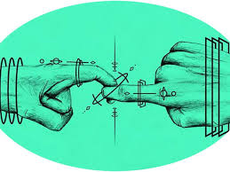
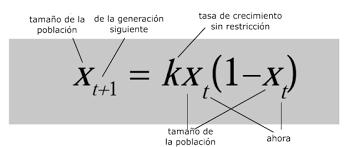
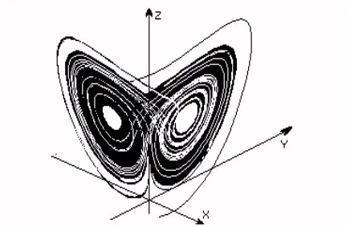
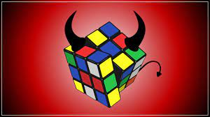

Una ecuación en matemática se define como
una igualdad establecida entre dos expresiones, en la cual puede haber una o más incógnitas que deben ser resueltas.
Las ecuaciones sirven para resolver diferentes problemas matemáticos, geométricos, químicos, físicos o de cualquier otra índole,
que tienen aplicaciones tanto en la vida cotidiana como en la investigación y desarrollo de proyectos científicos.
Las ecuaciones pueden tener una o más incógnitas, y también puede darse el caso de que no tengan ninguna solución
o de que sea posible más de una solución. Al cambiar la x por la solución, la igualdad debe ser cierta.


La teoría del caos es una teoría científica interdisciplinaria
y una rama de las matemáticas centrada en patrones subyacentes y leyes
deterministas altamente sensibles a las condiciones iniciales en sistemas
dinámicos que se pensaba que tenían estados de desorden e irregularidades
completamente aleatorios. La teoría del caos establece que dentro de
la aparente aleatoriedad de los sistemas caóticos complejos,
existen patrones subyacentes, interconexión, bucles de retroalimentación
constante, repetición, autosimilitud, fractales y autoorganización. El efecto mariposa, un principio subyacente del caos,

describe cómo un pequeño cambio en un estado de un sistema no lineal
determinista puede generar grandes diferencias en un estado posterior
(lo que significa que existe una dependencia sensible de las condiciones iniciales).
Una metáfora de este comportamiento es que: "El aleteo de una mariposa en China puede provocar un tornado en Texas."

El cubo de Rubik es un rompecabezas mecánico inventado por el escultor
y profesor de arquitectura húngaro Erno Rubik en 1974. Se tratá de un cubo
cuyas caras tienen cada una nueve estampas y que consta de un aspecto mecánico
que permite que sus caras gire y la estampa cambie de posición.
El problema principal del rompecabezas consiste en el punto de partida
de cada una de las caras muestra un color único.
Para consultar más informacion puede leer el siguiente artículo refente al tema:Descargar artículo INICIO